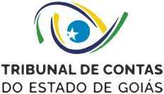
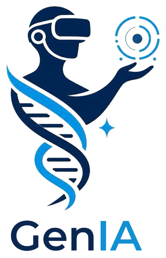
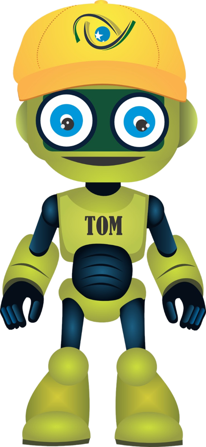

Toque no microfone e fale

Agenda A3P · educação ambiental
Ele aparece em tamanho real, em realidade aumentada, e responde por voz às suas perguntas sobre a Agenda Ambiental na Administração Pública.
Vamos pedir permissão para a câmera (só para mostrar o fundo) e para o microfone. Nada é gravado por nós. O reconhecimento de voz é feito pelo próprio navegador, que pode enviar o áudio ao serviço dele (Google ou Apple) para transcrever.